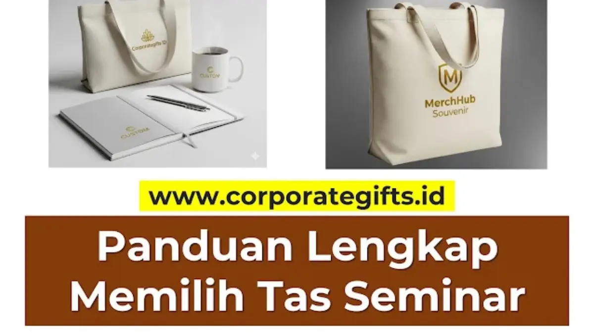

Corporate Gifts ID - Memilih tas seminar yang tepat adalah langkah krusial, karena tas ini tidak hanya berfungsi sebagai wadah seminar kit, tetapi juga sebagai media promosi berjalan bagi perusahaan Anda. Secara umum, terdapat tiga material utama untuk tas seminar: spunbond untuk opsi ekonomis dan massal, blacu untuk kesan ramah lingkungan, dan kanvas untuk daya tahan serta kesan premium. Mengetahui perbedaan ketiganya adalah kunci efisiensi anggaran acara.
Tas yang bagus dan awet akan dipakai berulang kali oleh peserta dalam aktivitas harian, sementara tas yang berkualitas rendah hanya akan berakhir di tempat sampah, bersama dengan anggaran dan citra brand Anda. Dengan tiga opsi populer di pasaran, mana yang sebenarnya paling tepat untuk event instansi Anda? Panduan mendalam ini akan membedah karakteristik, kelebihan, dan kekurangan setiap material guna membantu Anda memilih tas seminar kit yang paling tepat sasaran.
Poin Kunci Pemilihan Tas Seminar Kit:
- Representasi Visual Brand: Tas adalah elemen pertama yang disentuh audiens dan menentukan persepsi kualitas acara secara instan.
- Spunbond untuk Efisiensi Massal: Paling hemat biaya dan cepat diproduksi untuk ribuan peserta seminar publik.
- Blacu untuk Nilai Keberlanjutan: Kain katun mentah biodegradable dengan nuansa estetika alami dan ramah lingkungan.
- Kanvas untuk Kelas Eksekutif: Material tenun tebal berdaya tahan tahunan, sanggup menampung laptop dan berkas berat.
- Teknik Cetak Tepat Sasaran: Menyesuaikan metode sablon, DTF, atau bordir komputer dengan tekstur serat kain.
Mengapa Pemilihan Material Tas Seminar Begitu Penting?
Memilih material tas adalah keputusan strategis dalam perencanaan acara. Keputusan ini secara langsung memengaruhi tiga aspek utama:
- Kesan Pertama (First Impression): Material tas secara instan mengkomunikasikan skala dan nilai acara Anda. Apakah acara ini bersifat massal dan ekonomis, peduli isu lingkungan hidup, atau eksklusif berorientasi eksekutif?
- Media Promosi Berjalan (Walking Billboard): Tas yang kuat dan berdesain menarik akan digunakan kembali untuk berbelanja, kuliah, atau bekerja di kantor, menjadikan peserta sebagai duta merek Anda secara sukarela.
- Optimalisasi Anggaran Pengadaan: Tas kerap menyerap porsi anggaran signifikan dari total paket seminar kit, sehingga pemilihan bahan yang tepat menentukan sisa dana untuk item pelengkap lainnya.
1. Spunbond: Pilihan Paling Ekonomis untuk Skala Besar
Spunbond (sering disebut kain non-woven) adalah material sintetis yang dibuat dari serat plastik polypropylene yang dipress melalui pemanasan suhu tinggi tanpa proses penenunan benang. Inilah opsi paling hemat untuk goodie bag seminar promosi berskala besar.
- Kelebihan:
- Sangat Hemat Biaya: Harga per unit paling terjangkau, cocok untuk kuota ratusan hingga ribuan pcs.
- Ringan & Ringkas: Sangat mudah disimpan, diangkut dalam kardus besar, dan tidak menambah beban saat dibagikan.
- Pilihan Warna Melimpah: Tersedia puluhan palet warna cerah yang mudah dicocokkan dengan identitas korporat.
- Kecepatan Produksi Kilat: Proses pengerjaan press ultrasonic jauh lebih cepat daripada proses penjahitan kain tenun.
- Kekurangan:
- Daya Tahan Terbatas: Rentan sobek jika diisi beban tajam atau berat di atas 3 kilogram.
- Persepsi Nilai Rendah: Cenderung dipandang sebagai kantong belanja sekali atau dua kali pakai.
- Rekomendasi Acara: Seminar akbar kampus, pameran dagang (trade expo), sosialisasi instansi pemerintah berskala luas, atau kantong pembungkus berkas pendaftaran.

Detail komparasi tekstur kain, kerapian jahitan, dan hasil cetak sablon logo korporat pada tas seminar.
2. Blacu: Keseimbangan Antara Harga dan Estetika Eco-Friendly
Kain blacu adalah kain katun mentah (calico fabric) yang diproduksi tanpa proses bleaching atau pemutihan kimia. Karakteristik ini menghasilkan warna dasar broken white atau krem alami dengan bintik serat kapas otentik, menjadikannya pilihan favorit untuk acara bertema hijau dan keberlanjutan.
- Kelebihan:
- Harga Relatif Terjangkau: Sedikit di atas spunbond, namun jauh lebih ekonomis dibandingkan kain kanvas berat.
- Kuat & Tahan Lama: Menggunakan struktur benang tenun sehingga sanggup menahan beban buku tebal dan tumbler.
- Ramah Lingkungan (Biodegradable): Terbuat dari 100 persen serat tanaman alami yang mudah terurai di tanah.
- Estetika Minimalis Natural: Tampilan natural sangat digemari audiens milenial, komunitas kreatif, dan penggiat gaya hidup ramah lingkungan.
- Kekurangan:
- Warna Dasar Terbatas: Hanya hadir dalam warna asli kain krem mentah (putih tulang alami).
- Mudah Kusut: Membutuhkan penyimpanan yang rapi agar tidak terlihat berkerut saat dibagikan.
- Rekomendasi Acara: Konferensi lingkungan hidup (ESG), workshop kerajinan dan desain kreatif, seminar edukasi UMKM, dan perayaan CSR korporasi.
3. Kanvas: Pilihan Premium untuk Kesan Tahan Lama dan Berkelas
Kanvas adalah kain tenun berpola anyaman rapat dan tebal (plain weave) yang terkenal dengan ketangguhan tingkat tinggi. Tas tote bag berbahan kanvas secara instan mendongkrak status souvenir kit Anda menjadi hadiah premium bernilai tinggi.
- Kelebihan:
- Daya Tahan Maksimal: Sanggup menampung bobot berat seperti laptop, map tebal, hingga tumbler stainless tanpa risiko robek.
- Persepsi Nilai Sangat Tinggi: Dianggap oleh peserta sebagai merchandise eksklusif yang layak disimpan dan dipakai harian.
- Dapat Dicuci & Dirawat: Mudah dibersihkan dan disetrika layaknya pakaian sehingga awet digunakan bertahun-tahun.
- Hasil Cetak Paling Tajam: Kerapatan serat kanvas memungkinkan penerapan cetak digital DTF full color, sablon presisi, maupun bordir komputer.
- Kekurangan:
- Biaya Pengadaan Tertinggi: Harga bahan baku dan ongkos jahit lebih tinggi daripada opsi spunbond maupun blacu.
- Bobot Lebih Berat: Menambah berat paket logistik saat pengiriman ke luar kota dalam jumlah ribuan unit.
- Rekomendasi Acara: Rapat Kerja Nasional (Rakernas), simposium kedokteran dan hukum, seminar eksekutif C-Level, gathering mitra bisnis VIP, serta merchandise ritel resmi instansi.
Tabel Perbandingan Cepat: Spunbond vs Blacu vs Kanvas
Berikut rangkuman komparasi spesifikasi untuk memudahkan tim pengadaan dalam menentukan tas seminar kit yang paling ideal:
| Fitur Penentu | Tas Spunbond | Tas Blacu | Tas Kanvas |
|---|---|---|---|
| Tingkat Harga | Sangat Rendah (Ekonomis) | Sedang (Terjangkau) | Tinggi (Investasi Premium) |
| Kekuatan Beban | Maksimal 2 - 3 kg | Maksimal 4 - 6 kg | Hingga 8 - 12 kg (Laptop Safe) |
| Citra / Kesan | Praktis, Massal, Sederhana | Natural, Ramah Lingkungan | Elegan, Prestisius, Tahan Lama |
| Keberlanjutan (Eco) | Sintetis Polypropylene | 100% Katun Organik | Kain Tenun Katun Tebal |
| Varian Warna | Sangat Banyak (20+ Warna) | Krem Broken White Natural | Cukup Banyak (Hitam, Navy, dll) |
| Metode Cetak Logo | Sablon Rubber 1 - 2 Warna | Sablon Manual & Cetak DTF | Sablon Presisi, DTF, & Bordir |
Kesesuaian Teknik Cetak Sablon, DTF, dan Bordir
Keberhasilan visual sebuah tas seminar kit sangat ditentukan oleh keselarasan antara karakter serat kain dan teknologi pencetakan:
- Sablon Manual (Rubber/Pasta): Sangat cocok untuk tas spunbond dan blacu dengan desain logo solid tanpa gradasi warna rumit. Biaya produksi sangat hemat untuk pesanan jumlah banyak.
- Cetak Digital Film (DTF): Solusi terbaik untuk kain blacu dan kanvas apabila logo memiliki banyak gradasi warna, efek bayangan, atau ilustrasi bergaya digital art.
- Bordir Komputer: Pilihan paling eksklusif khusus untuk tas kanvas tebal. Bordir benang timbul memberikan kesan formal dan tidak akan luntur meski tas dicuci berkali-kali.
FAQ: Pertanyaan Seputar Pemilihan Tas Seminar Kit
Kesimpulan: Tas Seminar Adalah Investasi Kesan Pertama
Pada akhirnya, tidak ada satu material yang mutlak paling unggul untuk segala kebutuhan. Keputusan terbaik selalu bersandar pada harmonisasi antara tiga pilar: ketersediaan anggaran, profil audiens yang diundang, serta target citra korporat yang ingin ditanamkan.
Pemilihan tas ini sangat menentukan keberhasilan implementasi ide seminar kit kantor Anda secara keseluruhan. Tas seminar bukan sekadar pembungkus, melainkan bagian esensial dari kurasi souvenir kantor yang efektif dalam memperluas visibilitas merek Anda di ranah publik.
Siap menentukan material tas terbaik untuk agenda konferensi perusahaan Anda? Diskusikan kebutuhan spesifikasi, ukuran kustom, dan cetak mockup logo gratis bersama tim Corporate Gifts ID.